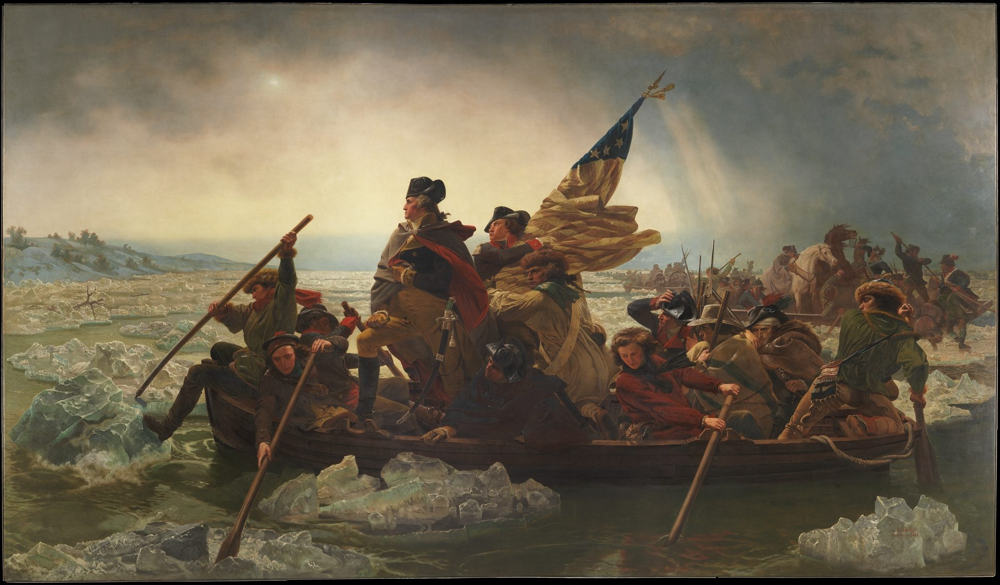
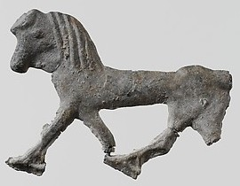

Emanuel Leutze,
Washington Crossing the Delaware
, 1851, 378.5 x 647.7 cm. Here at its own size (as far as your screen tells the truth).
You are looking at
of it.

3.1 cm: the lead horse, for company. Scroll. The scan holds 3 pixels per centimetre, so close up it is mostly my blur, not his paint.